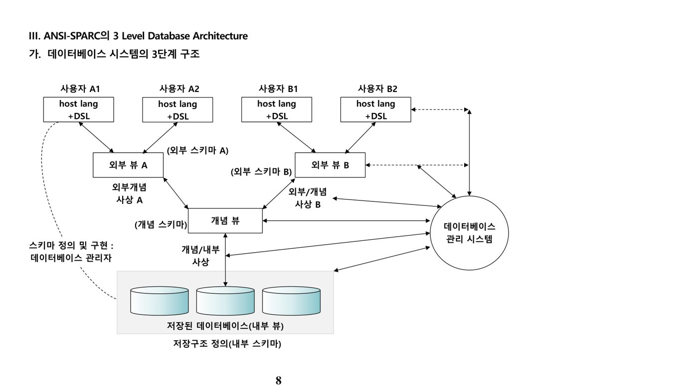
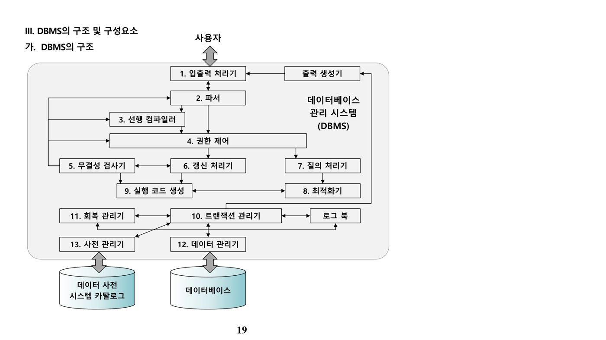

1. 데이터베이스 개요 (원본 p.5-16)
가. 데이터베이스의 정의
데이터베이스(Database)는 한 조직의 여러 응용시스템이 공유(Shared)하기 위해 최소의 중복으로 통합·저장·운영된 데이터의 집합이다. 체계화된 데이터의 모임, 즉 작성된 목록으로서 여러 응용 시스템들의 통합된 정보를 저장·운영할 수 있는 공용 데이터들의 묶음이라고도 정의한다.
| 특성 | 내용 |
|---|---|
| 저장된 데이터(Stored Data) | 컴퓨터가 인식 가능한 저장소에 위치 |
| 통합된 데이터(Integrated Data) | 최소의 중복, 통제된 중복으로 데이터를 통합 |
| 운영 데이터(Operational Data) | 조직의 목적에 부합하여 필수적으로 관리되는 데이터 |
| 공유 데이터(Shared Data) | 여러 프로그램이나 도구를 이용해 실시간으로 이용 |
데이터베이스는 백업·회복 용이, 표준화 용이, 응용 프로그램 개발 시간 단축, 융통성, 최신 정보의 가용성, 규모의 경제성이라는 장점을 갖지만, 운영비 오버헤드·복잡한 자료 처리 방법·백업 및 회복의 오버헤드라는 비용도 함께 수반한다.
나. 파일시스템의 문제점
| 구분 | 내용 |
|---|---|
| 데이터 종속성 | 응용 프로그램과 데이터 간의 상호 의존 관계가 높아, 데이터의 구성·접근 방법을 변경하면 응용 프로그램도 함께 변경해야 함 |
| 데이터 중복성 | 내용이 같은 데이터가 여러 곳에 저장·관리되어 데이터의 일관성·무결성·경제성을 만족시키지 못함 |
데이터베이스는 이러한 파일시스템의 데이터 종속성·중복성 문제를 최소한의 통제된 중복과 데이터-프로그램 간 독립성 확보로 해결하기 위해 등장했다.
다. 데이터베이스 시스템의 구성요소
| 구성요소 | 내용 |
|---|---|
| Database | 여러 응용 시스템이 공유하기 위해 최소 중복으로 통합·저장된 운영 데이터의 집합 |
| Database Language | 사람과 시스템의 인터페이스를 제공하는 도구(DML/DDL/DCL) |
| Database User | 데이터베이스 관리자(DBA), 응용 프로그래머(Developer), 사용자(User) |
| DBMS | 데이터베이스를 구축하고 이용하는 기능을 제공하는 시스템 소프트웨어 |
라. ANSI/SPARC 3단계 데이터베이스 아키텍처
ANSI/SPARC 3-Level 아키텍처는 데이터베이스를 외부(External)·개념(Conceptual)·내부(Internal) 3단계로 나누어 사용자 관점, 통합 관점, 물리적 저장 관점을 분리한다.
| 구분 | 내용 | 비고 |
|---|---|---|
| 외부 스키마(External Schema) | View 단계 — 여러 개의 사용자 관점으로 구성된 개별 사용자의 개인적 DB 스키마. 개개 사용자나 응용프로그래머가 접근하는 DB 정의 | 사용자 관점에 따른 스키마 구성 |
| 개념 스키마(Conceptual Schema) | 모든 사용자 관점을 통합한 조직 전체의 DB 기술 — 저장되는 데이터와 그들 간의 관계를 표현 | 통합 관점 |
| 내부 스키마(Internal Schema) | 내부 단계의 스키마로 구성 — DB가 물리적으로 저장된 형식, 실제 저장 방법을 표현 | 물리적 저장구조 |

마. 데이터 독립성과 사상(Mapping)
| 구분 | 내용 |
|---|---|
| 외부/개념 사상(External/Conceptual) | 특정 외부 스키마와 개념 스키마 간의 대응 관계 정의. 개념 스키마에 개체 삽입·속성 첨가 등 변화가 생겨도 이 사상만 적절히 변경하면 외부 스키마(응용 프로그램·사용자 뷰)에는 영향이 없음 → 논리적 데이터 독립성(Logical Data Independence) |
| 개념/내부 사상(Conceptual/Internal) | 개념 스키마와 내부 스키마 간의 대응 관계 정의. 내부 스키마(디스크 내 저장 필드)의 변경에 대해 개념 스키마·외부 스키마가 영향받지 않음 → 물리적 데이터 독립성(Physical Data Independence) |
기출문제에서는 세 스키마의 역할을 서로 뒤바꾸어 놓거나(예: "외부스키마=물리적 저장구조"), 논리적/물리적 데이터 독립성의 정의를 맞바꾸는 형태의 오답이 반복 출제된다. 3단계 스키마 구조의 궁극적 목표는 사용자 응용 프로그램을 물리적 데이터베이스로부터 분리시키는 데 있다.
2. DBMS (원본 p.17-26)
가. DBMS의 정의와 특징
DBMS(Database Management System)는 다수의 사용자들이 데이터베이스 내의 데이터를 접근할 수 있도록 해주는 소프트웨어 도구의 집합으로, 사용자 또는 다른 프로그램의 요구를 처리하고 적절히 응답하여 데이터를 사용할 수 있도록 지원한다.
| 특징 | 내용 |
|---|---|
| 실시간 접근 | 사용자의 요구에 대한 즉각적인 응답(Response) |
| 지속적 변화 | 삽입·삭제·갱신 작업이 수시로 발생 |
| 내용 참조 | 물리적 주소가 아닌, 데이터에 대한 조건으로 원하는 결과를 검출 |
| 동시 공유 | 여러 사용자가 동시에 자신이 원하는 데이터에 접근 가능 |
나. DBMS의 주요 기능
| 기능 | 내용 |
|---|---|
| 정의 | 데이터에 대한 형식·구조·제약조건을 명세하는 기능(카탈로그·사전 형태로 저장) |
| 구축 | DBMS가 관리하는 기억 장치에 데이터를 저장하는 기능 |
| 조작 | 특정 데이터를 검색하기 위한 질의, 데이터베이스 갱신, 보고서 생성 기능 등 |
| 공유 | 여러 사용자와 프로그램이 데이터베이스에 동시 접근하도록 하는 기능 |
| 보호 | 하드웨어·소프트웨어 오작동 또는 권한 없는 악의적 접근으로부터 시스템 보호 |
| 유지보수 | 시간이 지남에 따라 변화하는 요구사항을 반영할 수 있도록 하는 기능 |
다. DBMS의 내부 구조(질의 처리 경로)
사용자의 질의는 입출력 처리기 → 파서 → 권한 제어 → 질의 처리기 → 최적화기 → 실행 코드 생성 등의 순서를 거쳐 실제 데이터에 접근하며, 이 과정에서 트랜잭션 관리기·회복 관리기·사전 관리기 등이 함께 동작한다.

| 구성요소 | 내용 |
|---|---|
| ① 입출력 처리기(I/O processor) | 사용자와 직접 연관된 처리기로, 입력 명령어의 성공/실패 실행 여부를 사용자에게 응답 |
| ② 파서(Parser) | 처리 요구된 DDL 혹은 DML 명령에 대해 구문 분석 실행 |
| ③ 선행 컴파일러(Precompiler) | 내장 명령(embedded command)에 대해 호스트 언어 컴파일 전 컴파일 실행 |
| ④ 권한 제어(Authorization control) | 처리 요구된 내장 명령에 대해 사용자가 요청한 데이터를 이용할 수 있는지 사용 권한을 검사 |
| ⑤ 무결성 검사기(Integrity checker) | 데이터베이스의 의미상 정확성(일관성)을 통제하는 무결성 제약조건 위배 여부 검사 |
| ⑥ 갱신 처리기(Update processor) | 갱신 수행 시 무결성 검사기를 참조하여 갱신의 중간 형태를 증가 |
| ⑦ 질의 처리기(Query processor) | 사용자의 질의를 받아들여 하이 레벨 명령어로 동등하게, 효율적인 형태로 변환 |
| ⑧ 최적화기(Optimizer) | 최종 결과에 영향을 주지 않으면서 SQL 조작문을 구현하기 위한 효율적 액세스 전략 선정 |
| ⑨ 실행 코드 생성(Generation exe code) | 실행 가능한 프로그램, 즉 사용자 명령어에 대한 기계어 생성 |
| ⑩ 트랜잭션 관리기(Transaction manager) | 복수 사용자 환경에서 병행·동시 트랜잭션 문제를 없애고, 사용자가 자원을 배타적으로 이용하도록 함 |
| ⑪ 회복 관리기(Recovery manager) | 시스템 고장에 관계없이 데이터베이스가 일관된(올바른) 상태가 되도록 보장 |
| ⑫ 데이터 관리기(Data manager) | 장치 및 저장 관리기 — 하드웨어 자원 관리, 트랜잭션·회복 관리기 통제하에 물리적 액세스 수행 |
| ⑬ 사전 관리기(Dictionary manager) | 데이터베이스 구조 정보를 저장하는 데이터 사전과 외부·내부·개념 스키마 정의 액세스 수행 |
라. 데이터베이스 카탈로그(Catalog)
카탈로그(=데이터 사전)는 인덱스·뷰·통계·사용자 등 데이터베이스 자체를 기술하는 메타데이터(self-describing data)를 저장한다.
| 정보 | 내용 |
|---|---|
| 인덱스 관련 정보 | 인덱스의 이름·구조, 인덱스가 정의된 속성 정보, 키에 대한 정보 |
| 뷰 관련 정보 | 뷰의 이름·정의 |
| 통계 정보 | 릴레이션 카디널리티(튜플 수)·크기(페이지 수), 인덱스 카디널리티·높이·범위 |
| 사용자 정보 | 사용자 계정 정보(패스워드 포함), 사용자 권한 정보 |
| 기타 | 기본키·외래키 등 제약 조건 명세, 저장 구조 명세, 보안·권한 정보 |
카탈로그에는 테이블 크기, 속성 접근 권한, 참조 제약조건, 사용자 정의 타입 등이 포함되지만, 후보키(Candidate Key)는 카탈로그에 저장되는 개체가 아니라 속성 값이 유일성을 갖도록 하는 애트리뷰트들의 부분집합 개념 자체이므로 카탈로그 저장 정보를 묻는 문제의 오답으로 자주 출제된다.
3. 데이터베이스 언어 (원본 p.27-30)
가. 데이터베이스 언어의 분류
| 구분 | 상세 | 내용 |
|---|---|---|
| 스키마 정의 언어 | 데이터 정의 언어(DDL) | 개념 스키마를 정의하기 위해 사용되는 언어 |
| 기억장소 정의 언어(SDL) | 내부 스키마를 기술하기 위한 언어 | |
| 뷰 정의 언어(VDL) | 뷰 단계를 정의하기 위해 사용되는 언어 | |
| 데이터 조작 언어(DML) | 절차식 데이터 조작 언어 | 사용자가 어떤 데이터가 필요하며 어떻게 구하는지를 명시해야 하는 조작 언어 |
| 비절차식 데이터 조작 언어 | 사용자가 어떤(What) 데이터가 필요한지만 명시하고 어떻게(How) 구하는지는 명시하지 않는 조작 언어 | |
| 기타 언어 | 호스트 언어와 데이터 부속어 | 데이터 조작 질의를 포함한 언어를 호스트 언어, 그 안의 데이터 조작 언어를 데이터 부속어라 함 |
| 질의어 | 고수준 데이터 조작 언어 자체가 대화식으로 사용되는 언어 |
나. SQL 언어의 종류별 명령어
| 종류 | 명령어 | 설명 |
|---|---|---|
| 데이터 조작어(DML) | SELECT | 데이터베이스에 들어 있는 데이터를 조회·검색(Retrieve라고도 함) |
| INSERT / UPDATE / DELETE | 테이블의 데이터에 변형을 가하는 명령어 — 새 행 삽입, 원하지 않는 데이터 삭제·수정 | |
| 데이터 정의어(DDL) | CREATE / ALTER / DROP / RENAME | 테이블과 같은 데이터 구조를 생성·변경·삭제·이름변경 |
| 데이터 제어어(DCL) | GRANT / REVOKE | 데이터베이스 접근 및 객체 사용 권한을 부여·회수 |
| 트랜잭션 제어어(TCL) | COMMIT / ROLLBACK | 논리적 작업 단위를 묶어 DML 조작 결과를 트랜잭션 단위로 제어 |
UPDATE는 DCL이 아니라 DML이다 — 데이터를 실제로 수정하는 명령어이기 때문이다. DCL에는 권한을 부여·회수하는 GRANT/REVOKE, 트랜잭션을 처리하는 COMMIT/ROLLBACK이 속한다는 식으로 DCL의 범위를 넓게 오해하는 오답 선지가 자주 출제된다.
4. 시스템 구조 (원본 p.31-36)
가. 2계층 클라이언트-서버 구조(2-tier Architecture)
클라이언트-서버 구조는 다수의 PC·워크스테이션·파일 서버·프린터·데이터베이스 서버 등이 네트워크를 통해 서로 연결되어 있는 컴퓨팅 환경이다. 대부분 중앙집중식으로 시작했던 관계형 데이터베이스 관리 시스템에서 사용자 인터페이스와 응용 프로그램이 클라이언트 쪽으로 이동하고, ODBC·JDBC 등을 통해 서버와의 연결을 설정해 데이터베이스에 접근하는 구조다(클라이언트 ↔ DBMS 서버).
나. 3계층 클라이언트-서버 구조(3-tier Architecture)
3계층 구조는 클라이언트와 데이터베이스 서버 사이에 중간 단계(Middle Tier)인 응용 서버(Application Server)를 두고, 이 계층이 비즈니스 규칙(프로시저 또는 제약조건, 즉 비즈니스 로직)을 저장한 후 데이터베이스 서버의 데이터에 접근하는 구조다. 3개 계층의 역할은 각각 사용자 인터페이스(클라이언트), 응용 규칙 처리(응용/웹 서버), 데이터 접근(데이터베이스 서버)으로 요약된다.
| 계층 | 역할 |
|---|---|
| 클라이언트 | GUI·웹 인터페이스 — 사용자 인터페이스 제공 |
| 응용 서버(또는 웹 서버) | 응용 프로그램·웹 페이지 — 비즈니스 로직(규칙) 처리 |
| 데이터베이스 서버 | DBMS — 데이터 저장·접근 처리 |
2-tier 구조를 구성하는 클라이언트와 데이터베이스 서버 사이에 중간 단계를 하나 더 추가한 것이 3-tier 구조이며, 이 중간 단계는 일반적으로 응용(Application) 서버라 부르며 비즈니스 로직을 처리한다.
다. JDBC(Java Database Connectivity)
JDBC는 자바 프로그램이 데이터베이스에 접속해 SQL을 실행할 수 있도록 지원하는 표준 API로, 아래와 같은 클래스·인터페이스와 메소드로 구성된다.
| 패키지 | 클래스(인터페이스) | 클래스 용도 | 메소드 |
|---|---|---|---|
| java.lang | Class(c) | 지정된 JDBC 드라이버를 런타임 시 메모리에 로드 | forName() |
| java.sql | DriverManager(c) | 여러 JDBC 드라이버를 관리하는 클래스 — DB 접속, 연결객체 반환 | getConnection() |
| java.sql | Connection(I) | 특정 DB 연결상태를 표현하는 클래스 — 질의할 문장 객체 반환 | createStatement() |
| java.sql | Statement(I) | DB에 SQL 질의 문장을 질의하여 결과집합 객체 반환 | executeUpdate(), executeQuery() |
| java.sql | ResultSet(I) | 질의 결과의 자료 저장 | next(), getString(), getInt() |
executeUpdate()는 SQL 질의문을 실행해 튜플을 결과로 반환하는 메소드가 아니라, INSERT/UPDATE/DELETE와 같이 결과 집합이 아닌 갱신된 행의 수를 반환하는 메소드다. 튜플들을 결과로 반환받는 조회는 executeQuery()를 사용한다는 점에서 이 둘을 혼동시키는 선지가 자주 출제된다.
📚 전체 기출·예상문제 (8문항) — 원문 수록
본 강좌 원본 PDF에 수록된 기출·예상문제를 빠짐없이 원문 그대로 정리했습니다. 정답·해설은 강의 원문 기준입니다.